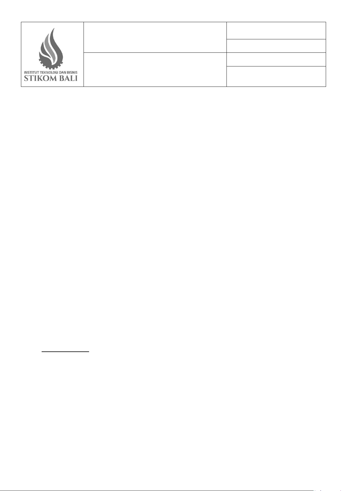

INSTITUT TEKNOLOGI DAN BISNIS STIKOM BALI
Jl Raya Puputan No. 86 Renon Denpasar
Telp. (0361) 244445 Fax (0361) 265773
: FM/01/05/DIRSDM/ITBSTIKOM
Nama : Nama Karyawan
NIK : Nomer Induk Karyawan
Jabatan : Jabatan Karyawan
Keperluan cuti : Keperluan Cuti
Tanggal cuti : 30 September 2024dan31 Desember 2024 atau100hari
No Handphone Aktif : Nomer Handphone Aktif
Menyetujui
Atasan langsung/Direktur/Dekan (*)
Menyetujui Menyetujui Menyetujui Menyetujui
Denpasar,30 September2024
Yang Mengajukan Cuti
Mengajukan Mengajukan Mengajukan
Mengetahui
Rektor/Wakil Rektor I/Wakil Rektor II/Wakil Rektor III (*)
Mengetahui Mengetahui Mengetahui
Diisi Bagian SDM
Jumalh Cuti sebelumnya : …………… Hari (Tahun ………………)
Jumlah Cuti diambil : …………… Hari
Sisa Cuti : …………… Hari
Paraf
Staf Bag. SDM :
Catatan :
Tanggal diterima di SDM :
NB(*) Coret yang tidak perlu